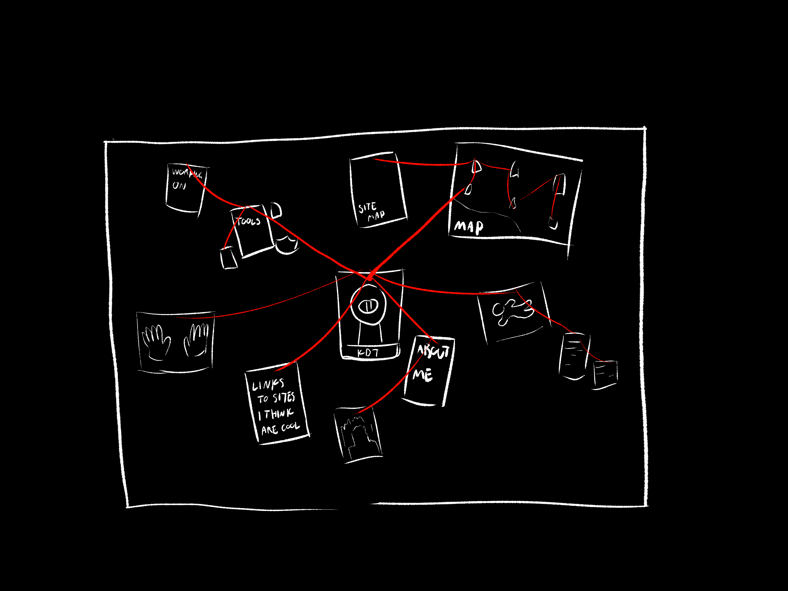

Here are some sketches I made to plan the layout of site
Home Page Plan

I was originally going to put like the Matrix falling code effect on the side but the ads were funnier.
"Joku kuva" just means "some picture" in finnish. It ended up being my sona and the thought bubble
"Yappaton" ended up being the Brain, "Other Projects" became the Factory and there are still some things that I haven't finished yet...
About Page Plan
This one stayed pretty much exactly the way I planned it
Art Grove Plans

Orignally I was going to show a bunch of trees to choose from. The problem with that would have been the fact that it's hard to add new trees to it. Then I came up with the idea of choosing the tree from the signs on the side which not only looks better but is also easier to expand.

But the basic idea of picking individual pieces from a tree stayed.
I'll add more plans here once whenever I make more...